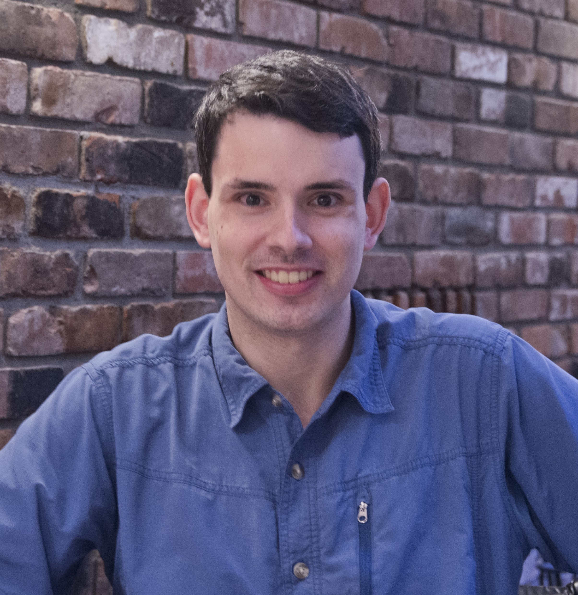
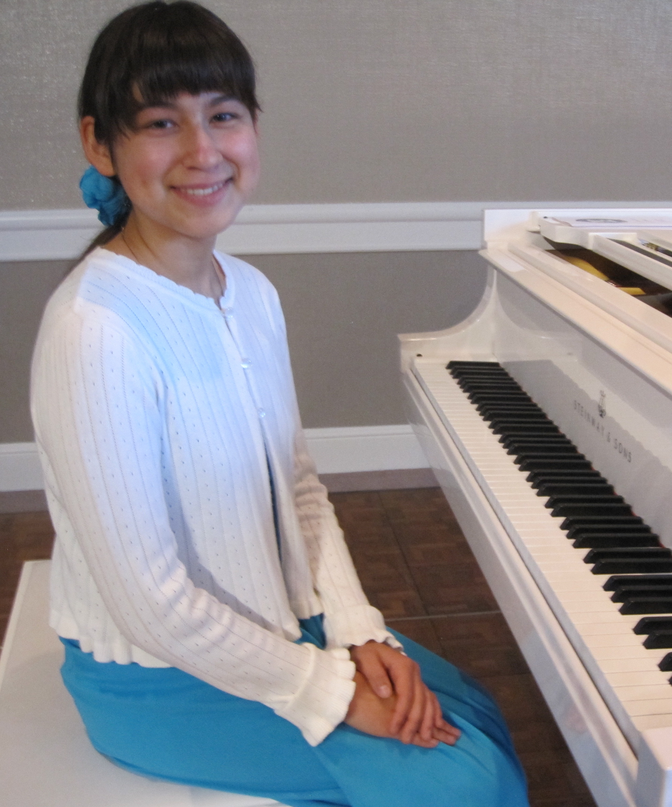

Patrick Dwyer

Patrick Dwyer is the President and
Facilitator of the Aggie
Neurodiversity Community at UC
Davis. He is an autistic graduate
student and autism researcher in the
UC Davis developmental psychology
program. Patrick has a strong interest
in ensuring that postsecondary education
is accessible for autistic students.
He is part of an international
collaborative group developing autism
and Universal Design resources for
faculty and TAs, and part of an autism
postsecondary resource development
group at the Sinneave Family Foundation.
He is also the co-chair of the Autistic
Researchers Committee at the
International Society for Autism
Research (INSAR) and a member of the
Autistic Researcher Review Board for
the Autism Intervention Research Network
on Physical Health (AIR-P).
Patrick’s main research interest is using
various methods (including
electrophysiology, questionnaires, and
psychophysics) to explore sensory
processing and attention in autism.
However, Patrick also has strong
interests in various topics such as K-12
education, intervention, heterogeneity,
and neurodiversity theory. He also has a
blog, autisticscholar.com.
|
Erica Mineo

Erica Mineo is a co-founder and the
Vice President of the Aggie
Neurodiversity Community at UC Davis.
She is a proudly autistic undergraduate
student majoring in Biological Sciences
and minoring in Music. She is a
passionate advocate and has spoken
about autism and neurodiversity at
numerous events and trainings organized
by our club, at the UC Davis
Neurodiversity Summit in 2019, and – in
front of a global audience of more than
eight thousand people – at the MIND
Summer Institute in 2020. She has also
participated in the UCD Student
Disability Center FACES Project and
panel discussions with the UC Davis
Mental Health Initiative.
Erica has a keen interest in veterinary
medicine and hopes to attend the UCD
veterinary school after completing her
undergraduate studies. She is currently
a Pharmacy officer with the Knights
Landing One Health Veterinary Clinic,
and a UCD Foal Team member. Her passions
include cats, horses, classical music,
playing the piano and violin, running,
nature photography, classic literature
(especially Shakespeare), writing poetry,
disability studies, autism advocacy, and
more recently, gardening and women's
soccer.
|